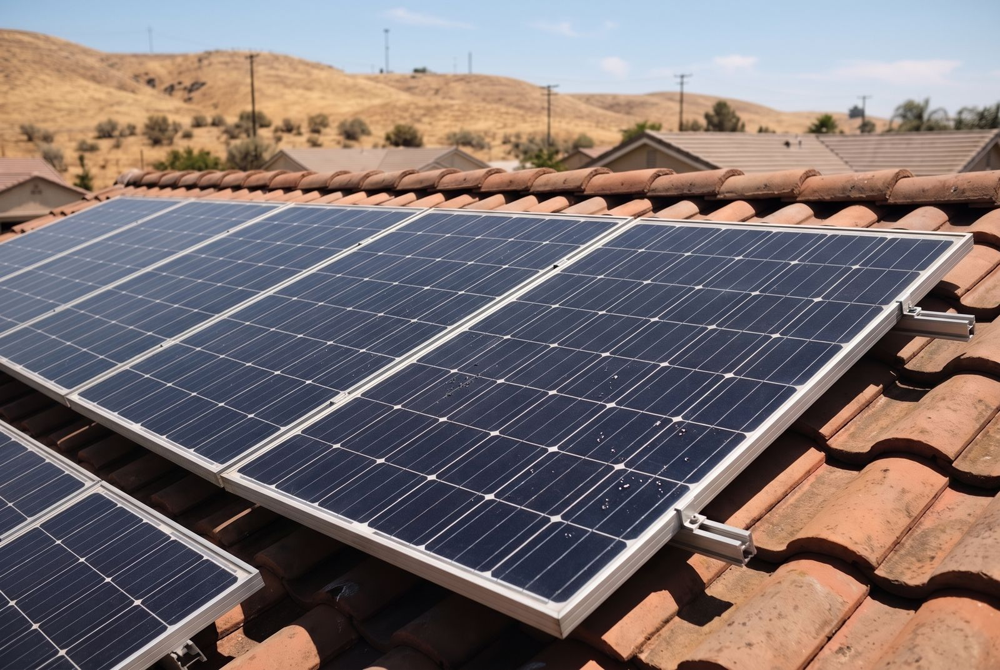
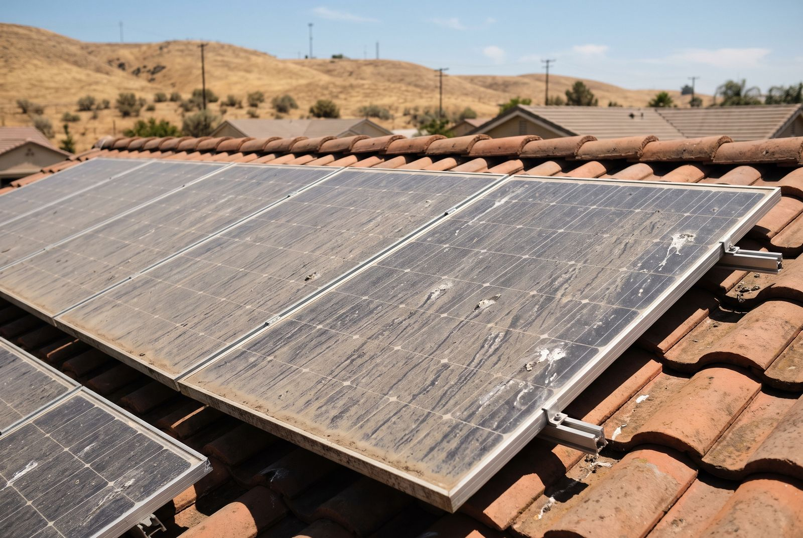
Rooftop solar array
Valley dust, pollen and dried water spots, cleared with a soft brush and pure water. No pressure, no soap left on the glass.
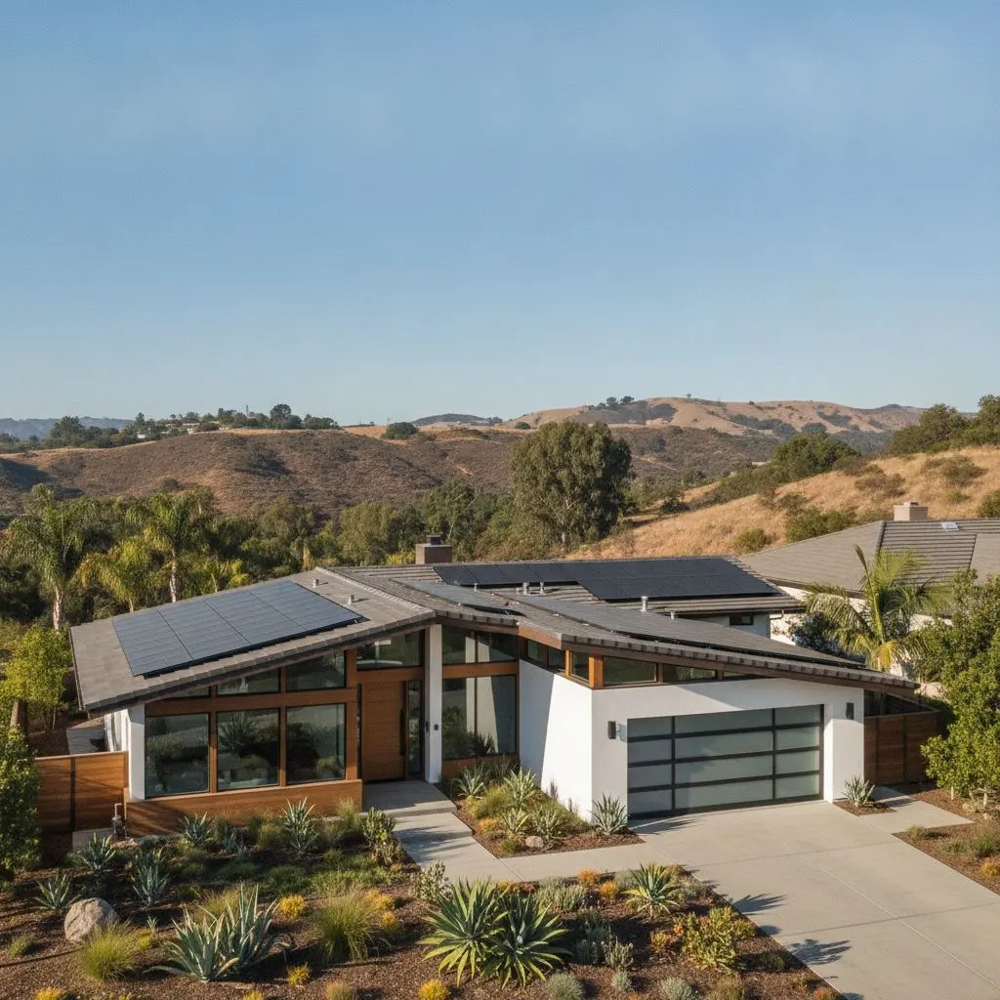
Soft wash house, roof and solar panel cleaning across Bakersfield and the southern Central Valley. I show up myself, every job, and I don't leave until it's right.
Soft brush and pure water. No soap residue, no pressure on the glass. Dusty Valley panels get back to working the way they should.
Get a quote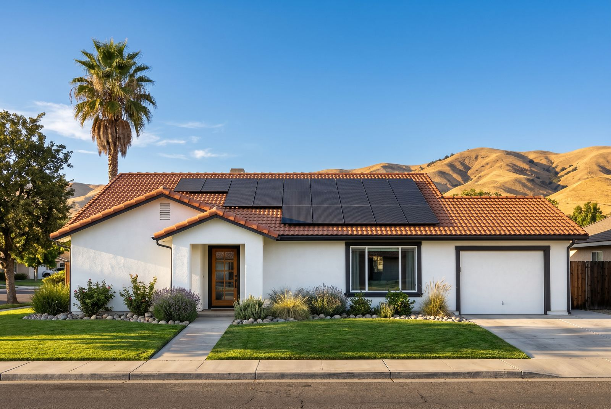
Low-pressure wash under 500 PSI with a solution that kills algae and mildew at the root. Safe for stucco, vinyl and painted wood.
Get a quote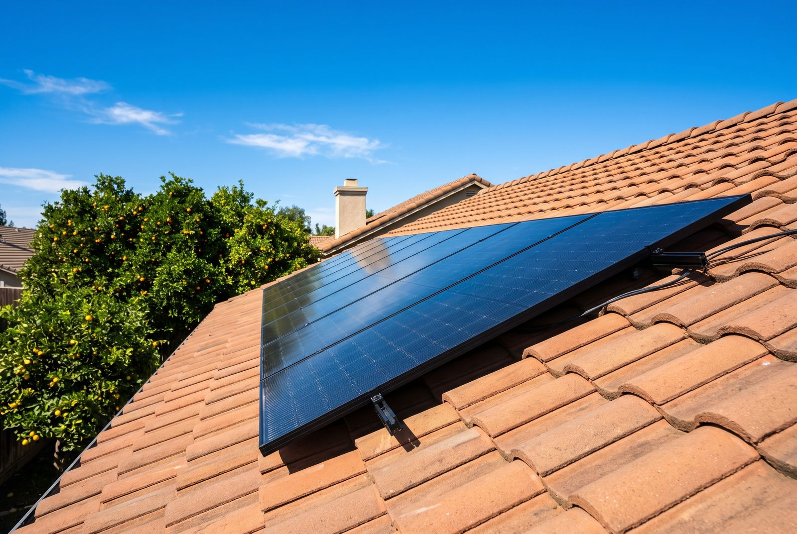
Lifts black streaks and moss without walking a pressure wand across your shingles or tile.
Get a quote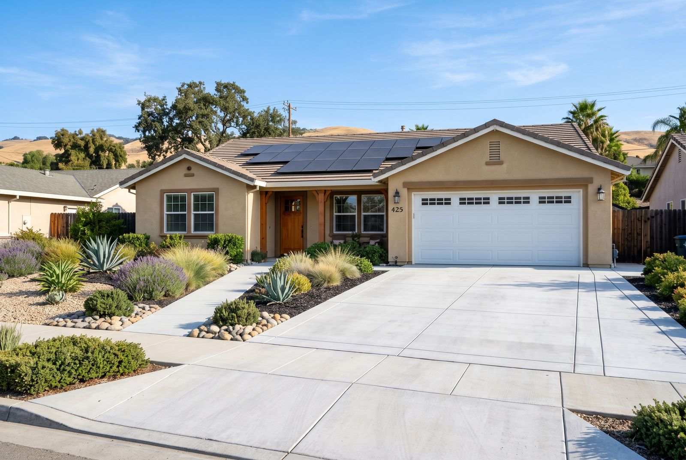
Surface cleaning for concrete and pavers. Oil spots, tire marks and that grey film, gone.
Get a quote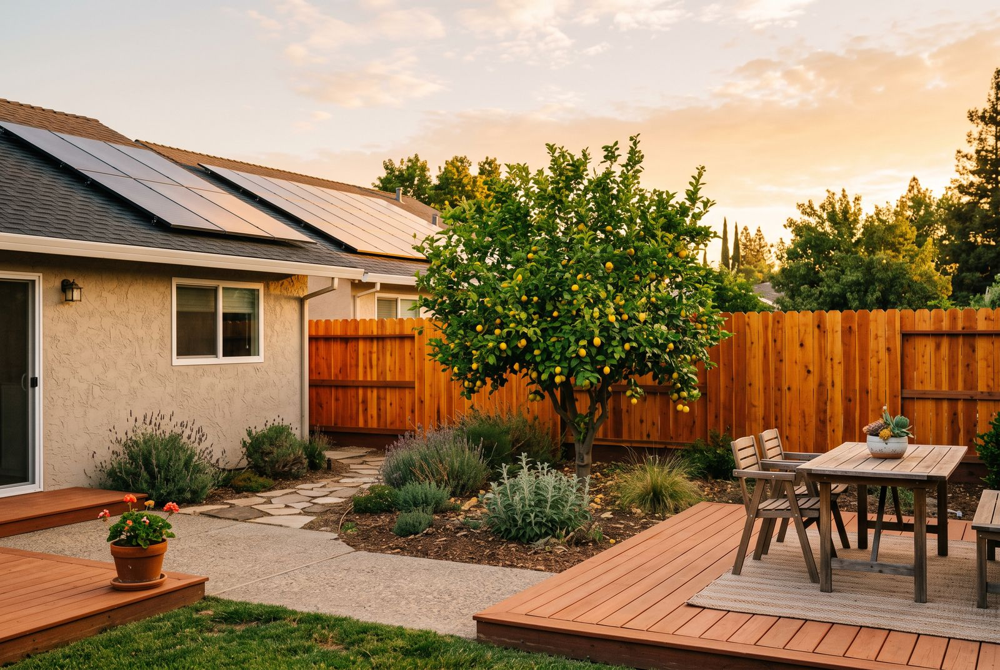
A gentle wash that brings back the wood grain and preps it for sealing or stain.
Get a quoteEvery review comes from a job I did myself. Read more on Google, or leave one after your clean.
Template: paste real Google reviews into these slides before launch.
[Paste a real customer review here. Two or three sentences about the job, the result and how it felt to work with Francois.]
[Second review. A solar panel cleaning review works well here, especially one that mentions output or the care taken on the roof.]
[Third review. Ideally one that mentions showing up on time, the written quote, or the final walk-through.]
I'm Francois Gariepy, and Rinse & Restore is me. No crews, no subcontractors, no salesman who disappears after the quote.
I started this business because I kept seeing homes in Bakersfield damaged by people blasting siding and solar glass with high pressure. Soft washing takes a little more care and a lot more patience. That's the part I like.
You'll get a text when I'm on the way, a written quote before I start, and a walk-through with me before I leave.
Drag the handle on each photo to compare. Example images for now; real Bakersfield jobs are added as they're finished.


Valley dust, pollen and dried water spots, cleared with a soft brush and pure water. No pressure, no soap left on the glass.
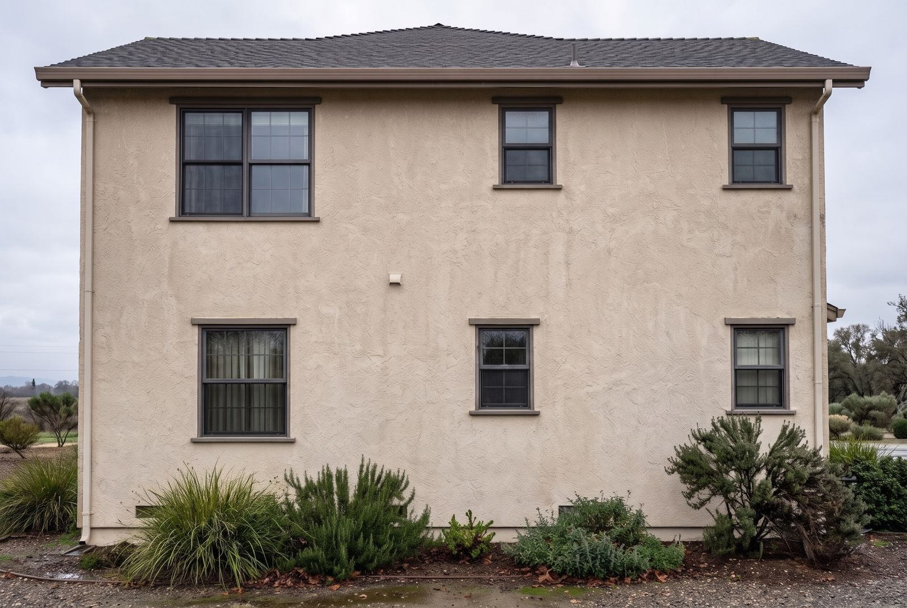
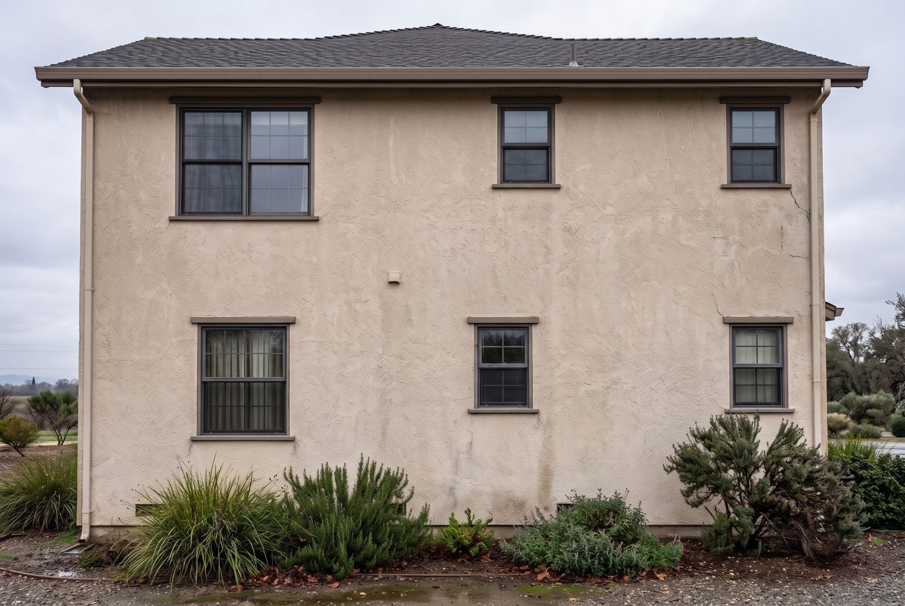
Green algae and black mildew streaks under the roof line, killed at the root with a low-pressure soft wash.
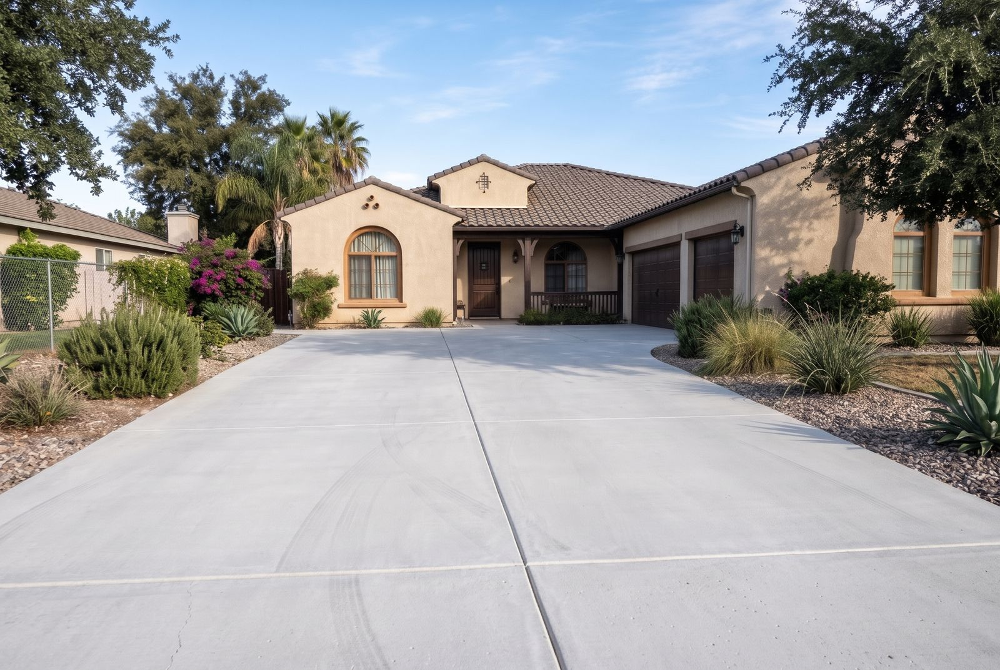
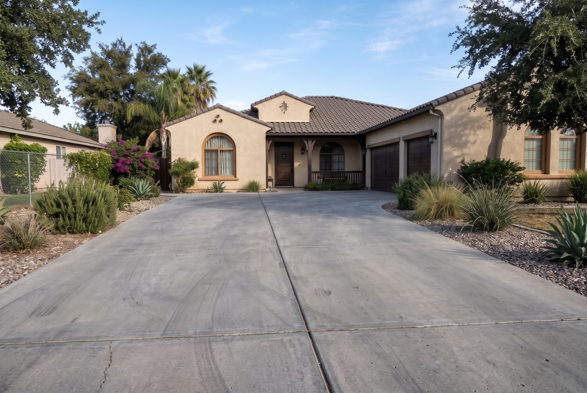
Oil spots, tire marks and grey film lifted with a surface cleaner, then rinsed and brightened.
Stucco, tile and a roof full of panels. Valley homes take a beating from dust, pollen and summer sun. I keep them clean without wearing them down.
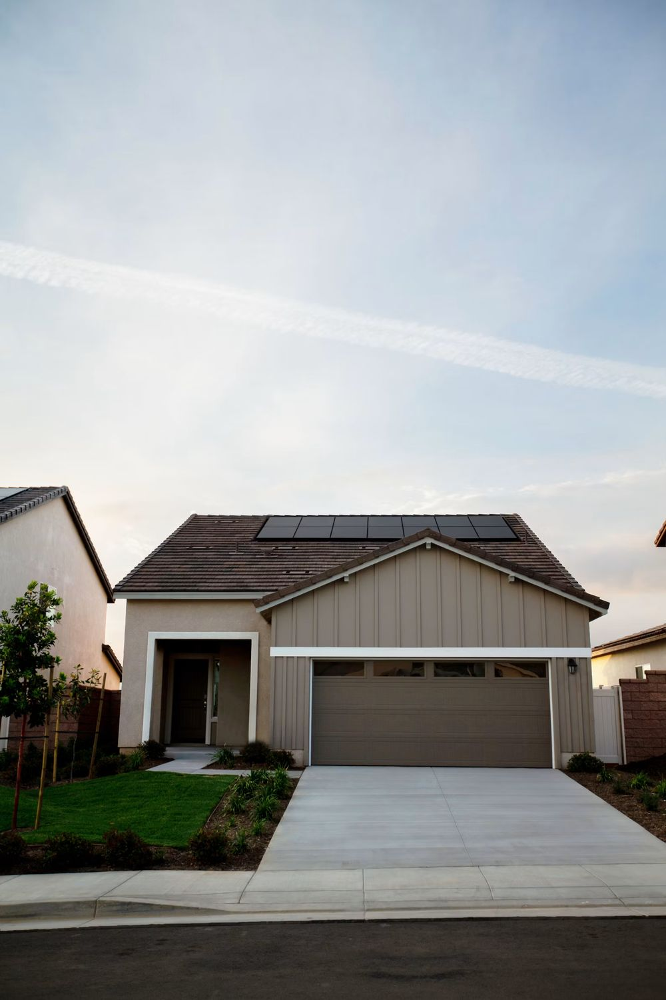
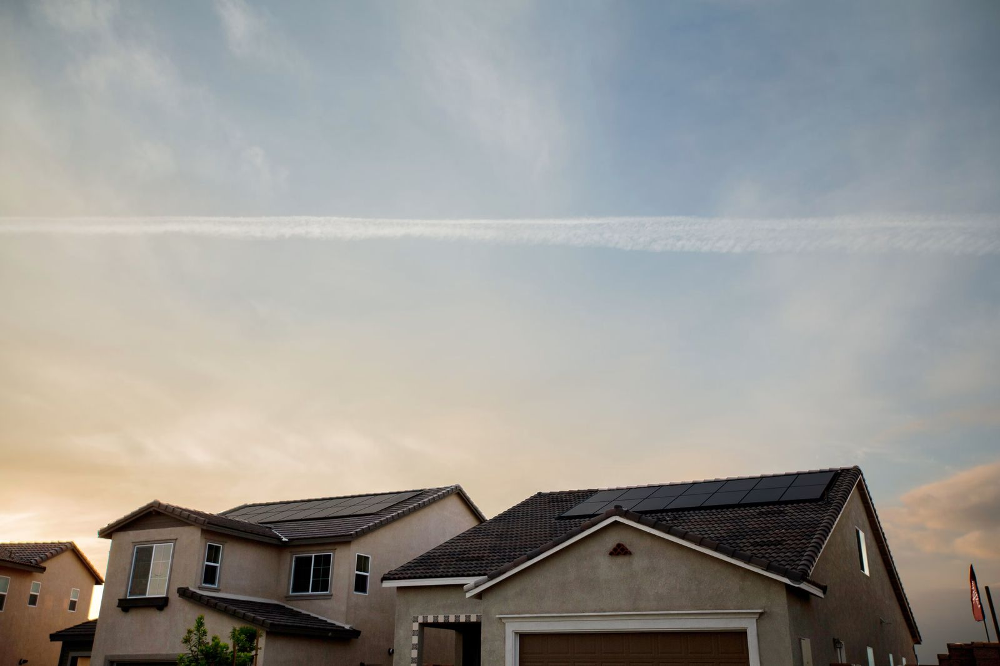
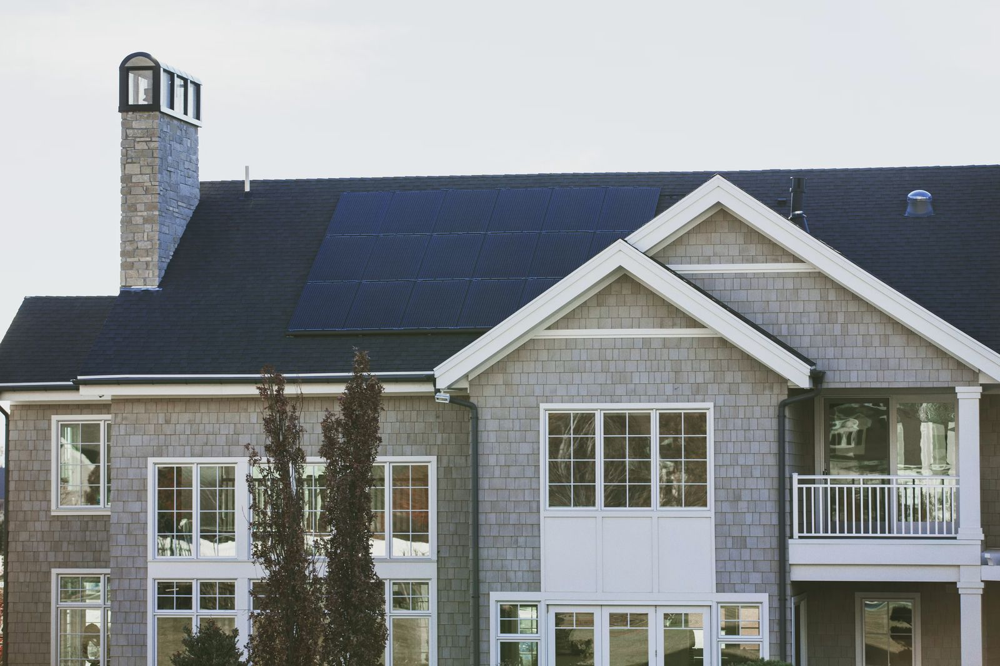
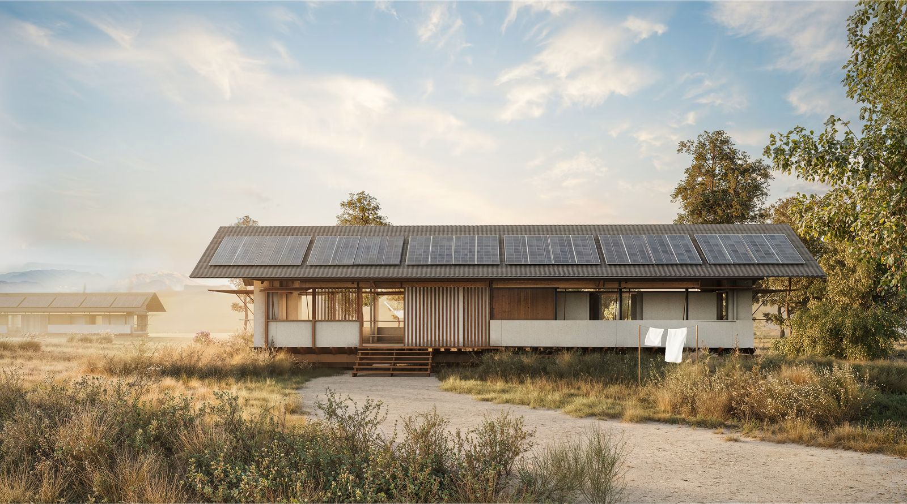
High pressure looks impressive, but it can etch stucco, force water behind siding, crack roof tiles and scratch solar glass. Soft washing lets the cleaning solution do the work.
Meet FrancoisStrips paint, etches surfaces, pushes water where it shouldn't go.
About the pressure of a garden hose. Safe for your home.
Algae and mildew grow back fast when you only blast the surface. The soft wash solution kills them, so your home stays clean longer.
Paint, seals, roof granules and the anti-reflective coating on solar glass all last longer without high pressure.
Valley dust, pollen and bird droppings block sunlight. A gentle, regular clean keeps your system doing its job.
I'm based in Bakersfield and work the valley floor of Kern County. That's where the dust, almond-bloom pollen and summer heat are hardest on homes and solar panels, and where I can show up on time.
In Bakersfield I regularly work in Seven Oaks, Northwest Bakersfield, Southwest Bakersfield, Riverlakes, Haggin Oaks, Tevis Ranch, Silver Creek and Oleander. Outside the list? Ask. If it's in the southern San Joaquin Valley, I'll tell you straight whether I can get there.
Tell me a little about your home and what you'd like cleaned. I'll get back to you within one business day with a written price.